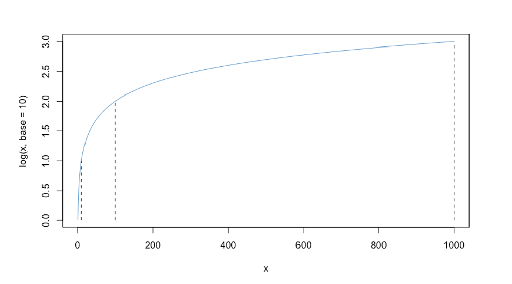
8 Log-linear regression
In the previous chapter we considered how to check the population assumptions of linear regression for a given data set. In this chapter we discuss one way to deal with assumption violations – by “transforming” the \(Y\) variable. In general, a transformation is just a function we apply to a variable to change it into another variable. We have already seen some examples of transformations: centering or deviation scores, standardizing or z-scores, and percentiles.
In this chapter we will apply the log transformation to the \(Y\) variable in a regression model, which results in the log-linear regression model. This transformation is widely used to address skew in the \(Y\) variable / residuals, and it also serves to illustrate the overall approach to transforming the \(Y\) variable in a regression model to address assumption violations.
There are two big themes to this chapter. First, whenever we apply a non-linear transform to the \(Y\) variable in a regression model, it always has three types of consequences. It affects:
- The distribution of the variable / residuals.
- The (non-)linearity of its relationship with predictor variables.
- The interpretation of the regression coefficients.
We have to consider all three of these consequences when transforming the \(Y\) variable. In particular, we might find that addressing one problem (e.g., non-normality) can create other problems (e.g., nonlinearity). The moral is that addressing assumption violations by transforming the \(Y\) variable is not always as straightforward as we might hope.
The other big theme of this chapter is the overall strategy for dealing with assumption violations. In particular, when we are faced with data that are not compatible with the assumptions of regression modeling, we often proceed as follows:
Transform the data to make them compatible with linear regression (or some other model we know how to use).
Run the analysis on the transformed data.
“Reverse-transform” the results of the analysis so that they are interpretable in terms of the original variable(s).
We will see this “transform\(\rightarrow\)analyze\(\rightarrow\)reverse- transform” strategy in this chapter, and again when we cover logistic regression in ?sec-chap-10. Both of these approaches are exemplars of generalized linear modeling, which is an advanced regression topic that formalizes the intuitive idea behind this approach.
This chapter addresses transformations of the \(Y\)-variable only. Another approach for dealing with assumption violations in linear regression is to transform one or more of the \(X\) variables instead of (or in addition to) the \(Y\) variable. These approaches are discussed in the next chapter.
8.1 Math review
Let’s start with a review the requisite math – logs and exponents. We are going to use these concepts later in the course as well, so it is worth sorting them out. If you haven’t seen logs or exponents in while, brace yourself. This fist section of the math review covers the basic interpretation of logs and their utility for reducing skewness. The following sections add some details.
In this math review, we use the lowercase symbols \(x\) and \(y\) for generic mathematical variables. These symbols do not correspond to the uppercase symbols \(X\) and \(Y\) in regression notation. So, e.g., \(x\) is not a predictor, its just a generic variable.
The function \(\log_{10}(x)\) returns the power to which we need to raise 10 to get the value \(x\). It answers the question: \(10^? = x\).
Some examples:
- \(\log_{10}(10) = 1\), because \(10^1 = 10\)
- \(\log_{10}(100) = 2\), because \(10^2 = 100\)
- \(\log_{10}(1000) = 3\), because \(10^3 = 1000\)
- …
In Figure 8.1, the three values computed above are shown as vertical dashed lines. In general, the plots shows that for every order of magnitude that \(x\) increases (e.g., from 10 to 100, or from 100 to 1000), its log only increases by one unit. Intuitively, this means that “big differences” on \(x\) translate into “small differences” on \(\log(x)\).
This “compression” of large values down to a smaller scale turns out to be useful for dealing with positive skew, as illustrated in Figure 8.2. This is a main reason that the log transform is widely used – to reduce positive skew.
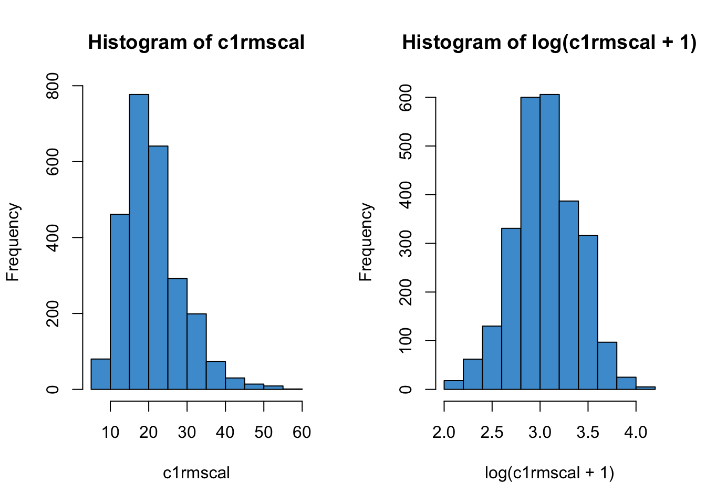
8.1.1 Natural logarithm
The symbol \(\log_{10}\) is read “log base 10”. In statistics, we usually use a different base – log base \(e\). Here \(e = 2.7182...\) is an irrational number called Euler’s number. We will see later on that using \(\log_e\) makes the interpretation of log-linear regression simpler. Note that in this context, \(e\) is not the residual from a regression model. Whether \(e\) denotes Euler’s number or regression residuals should be clear from context.
Regardless of which base we use, logs have the same overall compression effect, as shown in Figure 8.3. For example, \(\log_{10}(1000) = 3\) and \(\log_{e}(1000) \approx 7\) – both numbers are much smaller than \(1000\), which means that both functions achieve the same overall result of making big values into smaller values. The same is true when applied to real data – in fact, the right hand panel in Figure 8.2 was computed using \(\log_e\).
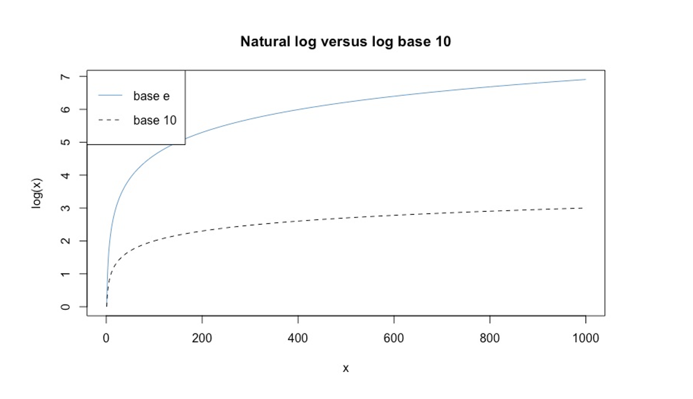
Log base \(e\), or \(\log_e\),is called the natural logarithm and often denoted “\(\ln\)”. But \(\ln\) can be hard to read so we will just stick with \(\log\) and omit the base symbol when we mean \(\log_e\). This is consistent with what R’s log function does – its default base is \(e\).
8.1.2 log and exp
Recall that our overall modeling strategy in log-linear regression is “transform\(\rightarrow\)analyze\(\rightarrow\)reverse- transform”. In mathematics, the reverse transform is called the inverse of the original function. The inverse of the logarithm is exponentiation. So, if we start by log-transforming our \(Y\)-variable, we are going to end up doing exponents later on.
To see how \(\log\) and \(\exp\) work together, let’s start with the number \(x= 100\), and take the log of that number:
\[ \log(100) = 4.60517 \] This equation tells us that if we raise \(e\) to the power of \(4.60517\) the result will be \(100\). We can think of \(x = 100\) as our original data and \(y = 4.60517\) as our transformed value.
By definition of the logarithm, we can equivalently write \(\log(100) = 4.60517\) as
\[e^{4.60517} = 100. \] This equation uses exponents (raise \(e\) to a power) rather than logs, but it communicates the same information as the previous equation. In our second equation, we take the output of the log (\(y = 4.60517\)) and use it as input to the exponent. The exponent then returns the original value of \(x = 100\).
The mathematical symbol \(\exp(y)\) is often used instead of \(e^y\) to avoid having to write complicated expressions in the superscript. So we can more clearly write the above equation as
\[\exp(4.60517) = 100. \] This is just a change of notation so we don’t have to typeset superscripts.
To summarize: the two equations presented below are equivalent by definition:
\[ \log(100) = 4.60517 \quad \text{and} \quad \exp (4.60517 ) = 100.\]
In the first one, we take the input value \(x = 100\) and transform it using the logarithm, which gives us the transformed value \(y = 4.60517\). In the second equation, we take the transformed value \(y = 4.60517\) as input into the exponent, which gives us back the original value of \(x = 100\).
In general, the relationship between the two functions is:
\[\log(x) = y \quad \text{and} \quad \exp (y) = x. \]
8.1.3 Pop quiz
I’ll ask some questions like the following to start class off. Please write down your answers and be prepared to share them in class. You check your answers by pasting the questions into \(R\) or Google’s search bar.
- \(\log(2.7182) = ?\)
- \(\log(1) = ?\)
- \(\log(0) = ?\)
- \(\log(-1) = ?\)
- \(\exp(1) = ?\)
- \(\exp(0) = ?\)
- \(\exp(-1) = ?\)
- What is larger, \(\log(10)\) or \(\exp(10)\)?
- \(\log(\exp(x)) = ?\)
- \(\exp(\log(x)) = ?\)
8.1.4 Rules for log and exp*
There are some rules for working with logs and exponents that we will use later on to derive some results about the interpretation of log-linear regression. You don’t need to know these but you might find them useful.
Addition with logs: \[\log(m) + \log(n) = \log(mn) \]
Multiplication with exponents:
\[ \exp(m) \times \exp(n) = \exp(m + n) \]
8.2 The log-linear model
There are a various ways to apply log-transformations in regression analysis, which are outlined in the following table and discussed in more detail in (cite-fox?). The focus of this chapter is log-linear regression, but the overall approach to linear-log and log-log is the similar. A worked example is coming up in ?sec-worked-example-9. (Note that the term “log-linear” is also the name of a family of models for contingency table data – that is not what we are talking about here.)
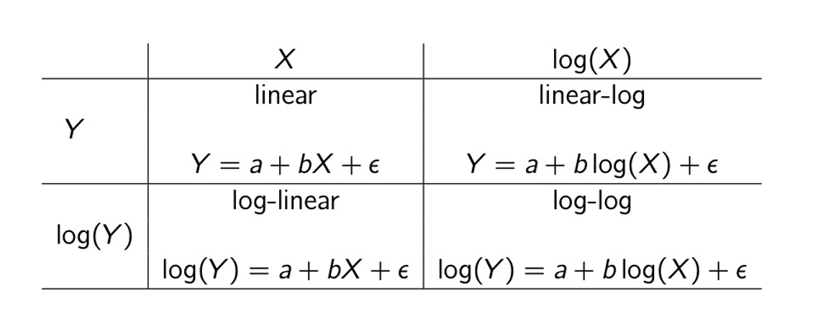
Before getting into the worked example, recall that a main theme of this chapter is that transforming the \(Y\) variable in a regression has three interrelated consequences:
- Changing the distribution Y variable / residuals
- Changing the (non-)linearity of its relationship with other variables
- Changing interpretation of the regression coefficients
The next few sections address each of these points in more detail.
8.3 Distribution of \(\log(Y)\)
Below are some examples of the log transform applied to positively skewed data. We can see a range of results, from “wow, that definitely worked” in the first example to, “better, but still not great” in the second two examples. These are realistic reflections of how a log transform works to address skew.
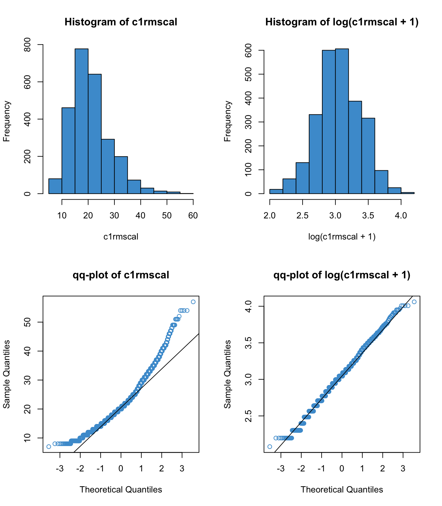
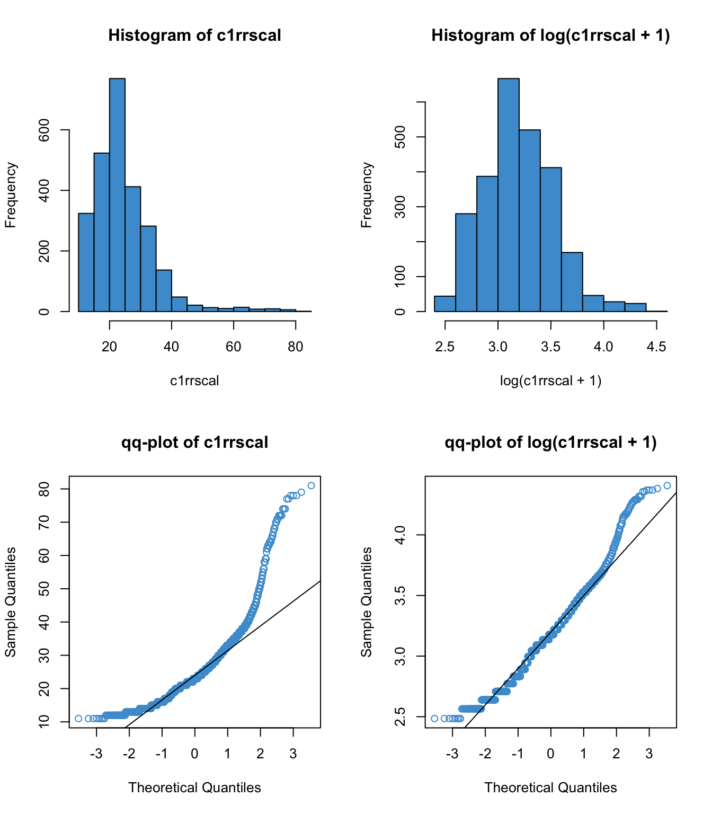
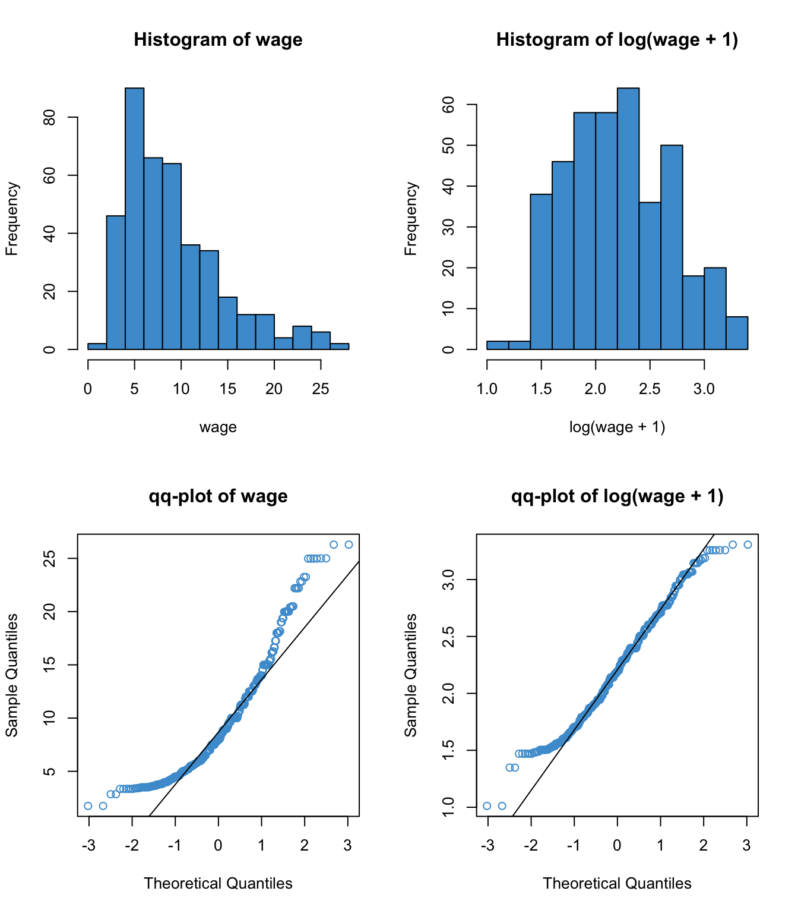
8.3.1 Why \(\log(x+1)\)?
There are a few things to note about this approach to correcting positive skew. First, you might have nocited that we are computing \(\log(x + 1)\) instead of \(\log(x)\). This is because the log function has “weird” behavior for values of \(x\) between 0 and 1. These values of \(x\) were not shown in Figure 8.1 and Figure 8.3, but they are shown below in Figure 8.8.
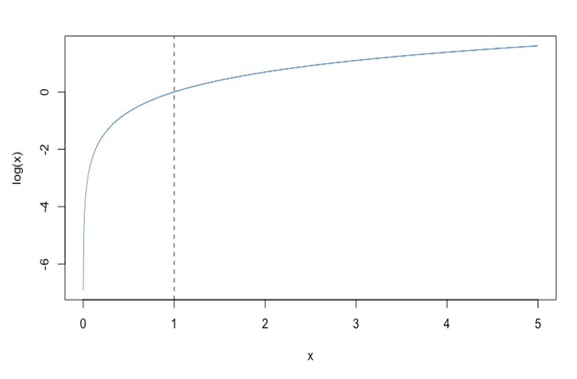
We can see that \(\log(1) = 0\), which is true regardless of the base (i.e., \(b^0 = 1\) for all choices of the \(b\)). But for values of \(x < 0\), \(\log(x)\) goes to negative infinity. This is because of how negative exponents are defined:
\[ b^{-x} = \frac{1}{b^x}. \]
The upshot for log-linear regression is as follows: if your \(Y\) variable takes on values in the range \((0, 1)\), the log transform is going to change those values into large negative numbers. This can result in negative skew, rather fixing your positive skew.
Figure 8.9 provides an example. The top row shows is the example as Figure 8.5 above, (math achievement in ECLS), and the bottom shows the same variable but transformed to proportion correct. In the left-hand panels we can see that the distribution of the proportion is qualitatively the same the as the distribution of the original variable. However, the log transform behaves differently for these two cases. Why? Because logs are “weird” on the range \((0, 1)\).
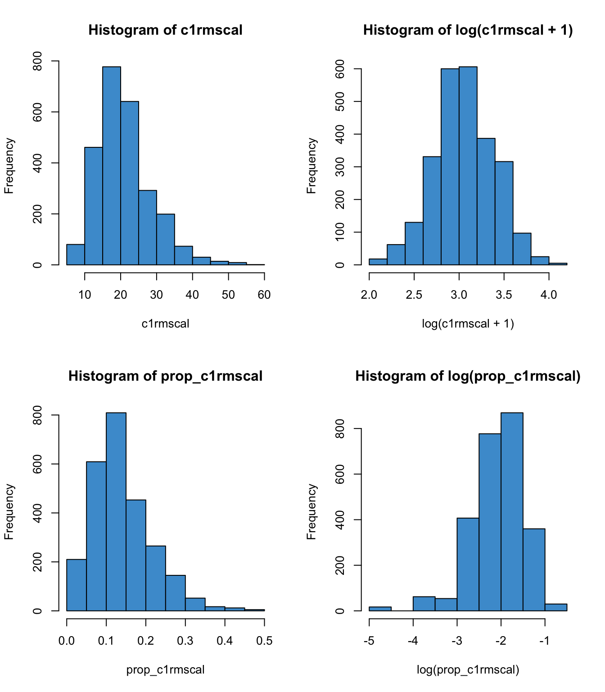
To avoid this situation we can add 1 to a variable before taking its log. Technically, there is no reason to do this if the variable does not take on values in the range 0 to 1, but I always apply the “add 1” rule just so I don’t have to worry about it.
8.3.2 What about negative values of \(x\)?
You may have noted that the “add 1” rule doesn’t cover cases where the variable can take on negative values. The problem here is that there is no way to turn a positive base \(b\) into a negative number through exponentiation - i.e., \(\log(x)\) is undefined whenever \(x < 0\).
To address situations where you want to log transform a variable that can take on negative values, we can use the transformation
\[ \log(x - \text{min}(x) + 1). \]
The following table shows how this transformation works. The first column shows the original data, the second column shows how subtracting the minimum makes all of the negative numbers positive, and the third column shows how adding 1 makes all of the numbers less than 1 equal to or greater than 1.
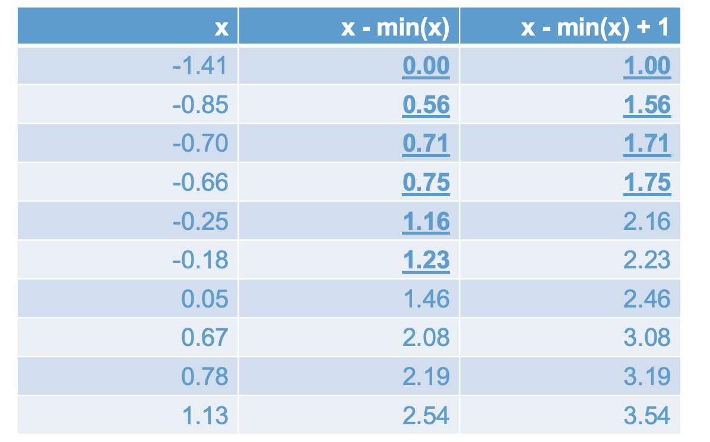
The take home message: If we have negative values of \(x\), before we apply the log transform we need to:
- Step 1. “Add” the minimum value of \(x\) to prevent undefined values of log
- Step 2. Add 1 to make sure no values are less than 1
Can you think of a log transformation that would work to address data that were negatively skewed, rather than positively skewed? Hint: the trick is similar to the one in this section
8.3.3 Skew versus censoring
It is important to distinguish between skew and floor (or ceiling) effects. Floor and ceiling effects are collectively known as “censoring”. While transforming you data can help with skew, it isn’t going to do anything about censoring, so it is important to be able to tell the difference.
Censoring can look like extreme skew, but is importantly different from skew because a large proportion of the observations have exactly the same value. An example is shown in Figure 8.10 below, which shows a floor effect in which a large proportion of the cases have a values of 0 (“are censored at zero”). Note that the log transformation does not do anything about the censored data. In general, if you transform a “heap” of values, then the same heap shows up in the transformed data.
To deal with censored data, we need to consider alternatives to linear regression (e.g., tobit regression). We won’t cover regression for censored data in this course. For our purposes, the moral is: don’t mistake censoring for skew, because they don’t have the same solution.
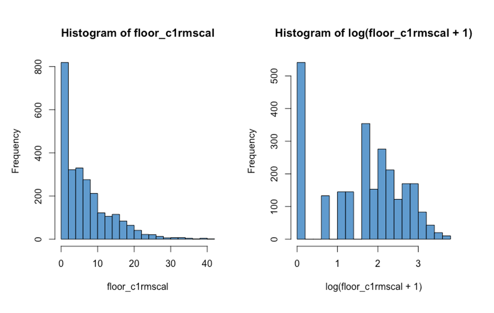
8.3.4 Final comments on dealing with skew
Recall that the assumptions of linear regression are not about the \(Y\) variable itself, but about the residuals (Section 7.1). So, a skewed outcome variable is not necessarily a problem. In particular, it is entirely possible that \(Y\) is positively skewed but the residuals are not, especially if one of the \(X\) variables has a similar distribution to \(Y\). So, in practice, you should not overly worry about non-normality of \(Y\) – its the residuals of your regression model that matter.
Second, even if the residuals are non-normal, this still doesn’t matter very much with very large samples. The central limit theorem assures us that, as the sample size gets larger, the sampling distribution of the regression coefficients converges to a normal distribution, regardless of the distribution of the residuals.
The moral of this section is that, if you are considering log-transforming an outcome variable due to skew, you should keep in mind:
- The problem may not really need to be fixed:
- Check the residuals!
- If you have sufficient sample size, mild to moderate violations of normality are not really an issue.
- The log-transformation has other important implications for you model, which we discuss next.
8.4 Relationship with \(X\)
In addition to affecting normality,(non-linear) transformations of the \(Y\) variable necessarily affect the linearity of regression. In particular, if \(Y\) is linearly related to \(X\), then \(\log(Y)\) cannot also be linearly related to \(X\).
Stated more formally, if
\[ Y = a + bX + \epsilon \]
then
\[ \begin{align} \log(Y) & = \log(a + bX + \epsilon) \\ & \neq a + bX + \epsilon. \\ \end{align} \]
In practice, this means that addressing positive skew using a log transform can sometimes create more problems than it solves. Figure 8.11 illustrates this issue. In the top row, we see the residual versus fitted plot and qqplot of residuals for the regression of Math Achievement (c1rmscal) on SES (wksesl). The linear regression resulted in a clear violation of normality (positive skew). In the bottom row, we see same output after log transforming Math Achievement – it addressed the issue with normality, but also made the nonlinearity more apparent.
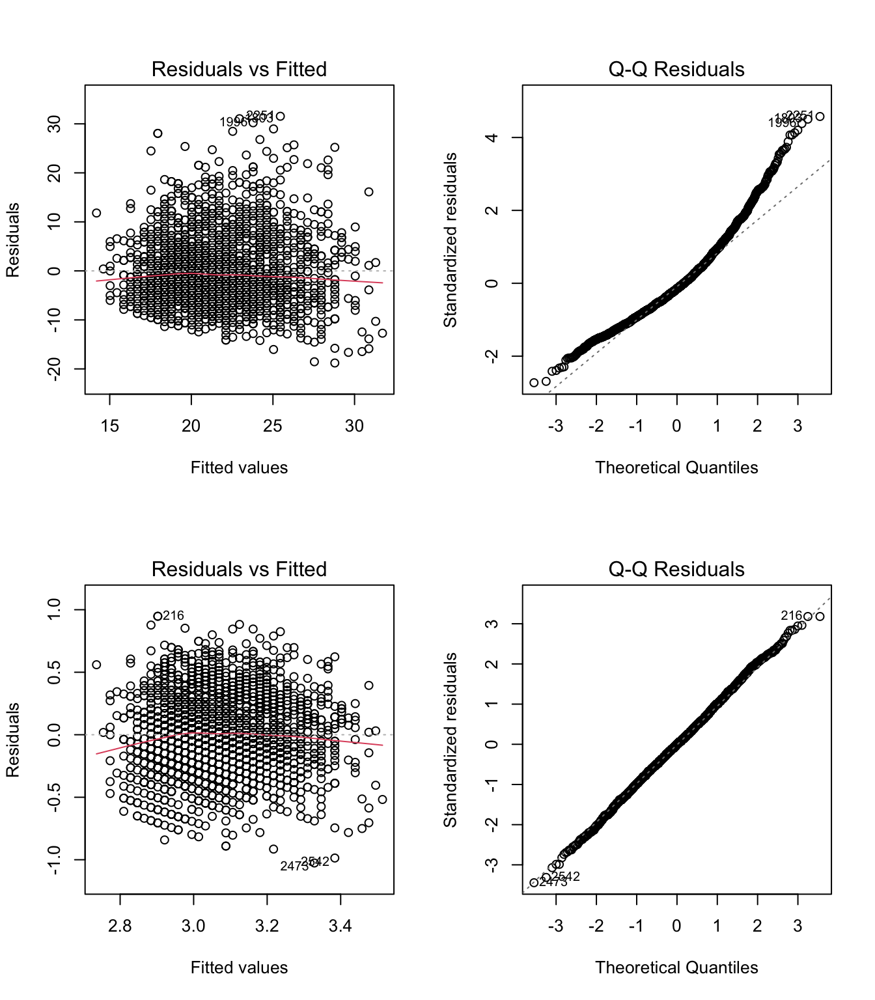
The take home message is that when we transform \(Y\) (or \(X\)) we necessarily affect the relationship between the variables, as well as their individual distributions. It is often the case that when we try to “fix” the normality of the \(Y\) variable, we can inadvertently make its relationship to \(X\) more non-linear.
As we discuss in the next chapter, we can address non-linearity of regression by transforming the \(X\) variable(s). But we should be sure that the problem we are trying to solve (normality) isn’t worse than the the problem we end up with (non-linearity).
8.5 Interpretation
The final point about the log-linear model is how it affects the interpretation of the model parameters. For example, in linear regression we know that a one unit increase in \(X\) leads to a \(b\)-unit increase in \(\hat Y\). But how do we interpret a \(b\)-unit increase in \(\log(Y)\)?
In general, one of the main shortcomings of “transforming your data” is that it can lead to uninformative or unclear interpretations of model parameters. If the results don’t make sense, its not much of a consolation to know that the model assumptions looked OK!
However, it turns out that there is very nice interpretation of the log-linear model. It is because of this interpretation that we often use the log transform to address skew in \(Y\), rather than some other transformation.
There two ways to interpret the regression coefficients in the log-linear model. First, we consider the easy but approximate way (you’re welcome!). Second, we consider the more complicated but accurate way, which involves reverse transforming the regression coefficients using exponentiation (see Section 8.1).
8.5.1 Approximate interpretation
In a log-linear model, the regression coefficients can be interpreted as the approximate proportion change in \(Y\), in the original units. So, in this equation,
\[ \log(Y) = a + bX + \epsilon \tag{8.1}\]
we can interpret \(b\) as the proportionate change in \(Y\) associated with a one unit increase in \(X\). This should seem like surprising: \(Y\) is not the outcome variable – \(\log(Y)\) is. But, we can still interpret the model with respect to \(Y\)!
Below are some numerical examples illustrating how to interpret the regression slope in Equation 8.1:
if \(b = .25\), then \(Y\) is expected to increase by 25% when \(X\) increases by 1 unit.
if \(b = 0\), then \(Y\) is expected to be the same when \(X\) increases by 1 unit (i.e., no relationship)
if \(b = -.45\), then \(Y\) is expected to decrease by 45% when \(X\) increases by 1 unit.
It is important to note that this interpretation is approximate and it only applies when \(|b|\) is small (e.g., \(|b|< .5\)). We will see how the approximation works and how to deal with other values of \(b\) when we get to the exact interpretation in ?sec-exact-8.
Before moving on, let’s get clear on what “proportionate change” means. Consider two values of a variable. We let \(Y\) denote the original value and \(Y^*\) denote a new value. The “change” is the difference \(Y^* - Y\). Treating the change as a proportion of the original value \(Y\) gives us the proportionate change:
\[ \text{proportionate change} = \frac{Y^* - Y}{Y} = Y^*/Y - 1.\]
Multiplying the proportionate change by 100 gives us the percentage change, which is usually easier to talk about in words. The numerical examples listed above used percentage change. If we want to talk about the change without specifying the units (e.g, proportion or percentage), we say “relative change.”
Note that relative change is not the same as relative magnitude. \(Y'/Y\) is the magnitude of \(Y^*\) relative to \(Y\). As shown in the above equation for proportionate change, we need to subtract 1 from relative magnitude to get relative change.
For example, say I loan \(Y = 100\) dollars to a friend and they pay me back \(Y^* = 150\) dollars. The amount my friend paid me back is 1.5 times, or 150%, of what I initially lent them:
\[ Y^*/Y = 150/100 = 1.5 \]
This is the relative magnitude of the two amounts.
Alternatively, we could say that I have gained 50%, or 1/2, over the initial amount:
\[ Y^*/Y - 1 = 150/100 - 1 = .5 \] This is relative change.
As an example of relative loss rather than gain, assume \(Y^* = 40\) and \(Y = 100\), then \(Y^*\) is 40% of \(Y\) (relative magnitude) and the relative change (decrease) from 100 to 40 is 60%.
Here are some more examples. Please write down your answers and be prepared to share them in class.
How many times larger is \(Y^* = 6\) than \(Y = 2\)?
What is the relative increase from \(Y = 2\) to \(Y^* = 6\)?
What is the percent increase from \(Y = 200\) to \(Y^* = 600\)?
What is the percent decrease from \(Y = 600\) to \(Y^* = 200\)?
What is the percent change from \(Y = 1\) to \(Y^* = 1\)?
The answers are hidden below and can be viewed by pressing the “code” button. But please keep in mind that you won’t learn anything by viewing the answers before trying the questions.
Code
# 1. 6 is 3 times larger than 2, or 300% percent larger than 2 (6/2 = 3)
# 2. 6 is a 200% increase from 2 (6/2 - 1 = 2)
# 3. 600 is a 200% increase from 200
# 4. 200 is a 66% decrease from 600
# 5. 1 is a zero percent increase from 1 (but 100% as large as 1!)8.5.2 A hypothetical example
This section provides a hypothetical example comparing the interpretation of linear regression and log-linear regression. We will work though the example in class, so please write down your answers to the questions in this section and be prepared to share your responses.
To get a better idea of how the interpretation of log-linear regression differs from the interpretation of linear regression, let’s consider the following variables:
- \(Y\) is wages (dollars per week)
- \(X\) is hours worked per week
A linear relationship between \(Y\) and \(X\) would means
\[ \widehat Y = a + bX. \]
Let’s further assume that \(b = 20\). With this information, you should be able to work out answers to the following two questions pretty easily:
For someone who is expected to earn $100/week, what would be their predicted earnings if they worked one hour more per week?
What about for someone who was expected to earn $1000/week?
Now let’s consider a log-linear model, this time with a regression coefficient of \(b = .2\):
\[ \log(\widehat Y) = a + bX. \] Using this log-linear equation, please answer the following questions:
For someone who is expected to earn $100/week, what would be their predicted earnings if they worked one hour more per week? To answer this question, use the interpretation of \(b\) in terms of proportionate change, as outlined in the previous section.
What about for someone who was expected to earn $1000/week?
The answers are hidden below. You can use the “code” button to see them, but please try to answer on your own first.
Code
# 1. 120 dollars per week
# 2. 1020 dollars per week
# 3. 120 dollars per week
# 4. 1200 dollars per weekThis example shows that, while the linear model represents change in fixed units (e.g., dollars), the log-linear model represents change that is relative to an initial value of \(Y\). This is particularly useful in applications involving monetary outcomes, where it has been argued that people’s “subjective evaluation” of money is more like the latter than the former.
The contrast between “fixed units” and “subject value” interpretions can be illustrated as follows.
At $100/week, $20 for an additional hour is equivalent to a 20% increase in wages for only a 2.5% (1/40) increase in hours worked.
At $1000/week, $20 is a 2% increase in wages, which is less than the 2.5% increase in hours worked.
Thus, the same fixed amount, $20, doesn’t have the same “subject value” for someone making $100/week as compared to someone making $1000/week. On the other hand, a 20% increase for both people might be considered as having equal subjective value. On this logic, the person making $1000/ week would need a $200 increase in order experience the same subject value as the $20 increase provides to the person making $100/ week.
Some real life examples of this kind of interpretation are linked below.
Sliding scales for parking, car pool / day care late pick-up, bail and fines, https://www.theatlantic.com/business/archive/2015/03/finland-home-of-the-103000-speeding-ticket/387484/
Proportional tuition based on income and number of dependents. https://ronclarkacademy.com/tuition-and-financial-aid
8.5.3 Exact interpretation
If we want an exact interpretation of the regression coefficients in a log-linear model, we need to do some “follow-up math” with exponents. The main result is about the relative magnitude of \(\hat Y\) corresponding to a one-unit change in \(X\)
\[ \frac{\widehat Y(X + 1)}{\widehat Y(X)} = \exp(b) \tag{8.2}\]
where \(\widehat Y(X)\) is the predicted value of \(Y\) for a given value of \(X\). This is result derived in Section 8.5.5 below (optional).
Based on Equation 8.2, we can interpret the exponentiated regression coefficient in a log-linear model in terms of relative magnitude. In practice, people often prer to use relative change instead. From Equation 8.2 and the definition of proportion change in Section 8.5.1, it follows that the proportion of change in \(\widehat Y\) for a 1 unit increase in \(X\) is exactly equal to \(\exp(b) - 1\).
In the hypothetical example above (wages and hours worked), the exact proportion change in the log-linear model is
\[ \exp(.2) - 1 = 1.2214 - 1= .2214 \]
or about 22%.
8.5.4 Summary
While there are many transformations that can be used to address skew, the log-linear model has the advantage that it is still interpretable in terms of the original \(Y\) variable. In fact, in many applications, notably those in which \(Y\) is monetary, the interpretation is arguably better than for linear regression!
There are two ways to interpret the regression coefficients in the log-linear model
The approximate interpretation: a one unit of change in \(X\) is expected to yield a \((b \times 100)\%\) change in \(Y\). This interpretation only applies when \(b\) is small (e.g., less than .5 in absolute value).
The exact interpretation: a one unit of change in \(X\) is expected to yield a \((\exp(b) - 1) \times 100\%\) change in \(Y\), and this applies for any value of \(b\).
8.5.5 Derivation of Equation 8.2 *
Start with the log-linear model, exponentiate both sides, and then use the multiplication rule for exponents:
\[\begin{align} \log(\widehat Y) & = a + bX \\ \implies & \\ \exp(\log(\widehat Y)) & = \exp(a + bX) \\ \implies & \\ \widehat Y & = \exp(a)\exp(bX) \\ \end{align}\]
Then do the same thing for \(X+1\) in place of \(X\):
\[\begin{align} \log(\widehat Y^*) & = a + b(X + 1) \\ \implies & \\ \widehat Y^*& = \exp(a)\exp(bX)\exp(b) \\ \end{align}\]
Finally, take the ratio of \(\widehat Y^*\) to \(\widehat Y\):
\[ \frac{\widehat Y^*}{\widehat Y} = \frac{\exp(a)\exp(bX)\exp(b)}{\exp(a)\exp(bX)} = \exp(b) \]
This gives Equation 8.2.
The reason that the approximate interpretation in Section 8.5.1 works is because
\[ \exp(b) - 1 \approx b \]
for \(|b| < .5\). This is illustrated in the graph below, where the blue line is \(\exp(b)-1\) and black line is \(b\). We can see that the two lines are pretty close over the range (-.5, .5).
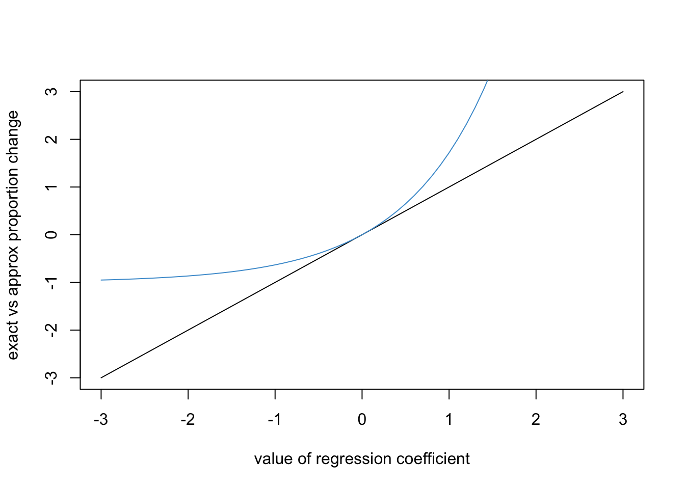
8.6 Worked example
This section works through log-linear regression using a new example, the Wages.Rdata data (source: Weinberg & Abramowitz (2017) Statistics using Stata: An integrative approach. Cambridge University Press). The dataset was collected in 1985 from \(N = 400\) respondents and contains the following variables.
Code
# Load the data and take a look
load("Wages.RData")
knitr::kable(head(wages))| educ | south | sex | exper | wage | occup | marr | ed |
|---|---|---|---|---|---|---|---|
| 12 | 0 | 0 | 17 | 7.50 | 6 | 1 | 2 |
| 13 | 0 | 0 | 9 | 13.07 | 6 | 0 | 3 |
| 10 | 1 | 0 | 27 | 4.45 | 6 | 0 | 1 |
| 9 | 1 | 0 | 30 | 6.25 | 6 | 0 | 1 |
| 9 | 1 | 0 | 29 | 19.98 | 6 | 1 | 1 |
| 12 | 0 | 0 | 37 | 7.30 | 6 | 1 | 2 |
We will focus on regressing hourly wage (wage) on years of education (educ). The distribution of the outcome variable and its relationship with the predictor are depicted below.
Code
attach(wages)
par(mfrow = c(1,2))
hist(wage, col = "#4B9CD3")
plot(educ, wage, col = "#4B9CD3")
This example is a good candidate for log-linear regression because
wagesis positively skewed- Its relationship with
educappears somewhat exponential - The log-transform provides a suitable interpretation when the outcome is monetary
Moreover, a quick a look at the linear regression model (below) shows that all of the model assumptions are violated. So, time to try something other than regular regression!
Code
mod1 <- lm(wage ~ educ)
# Check out model fit
par(mfrow = c(1,2))
plot(mod1, 1, col = "#4B9CD3")
plot(mod1, 2, col = "#4B9CD3")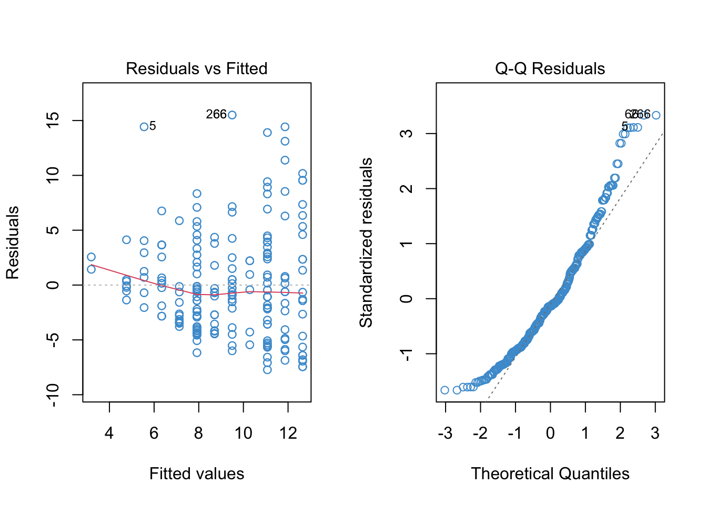
8.6.1 Log-linear regression of Wages on Education
To run a log-linear model, we can transform the \(Y\)-variable (wages) using the log function, and then run the model as usual. The diagnostic plots are shown below.
Code
# Create log transform of wage
log_wage <- log(wage + 1)
# Regress it on educ
mod2 <- lm(log_wage ~ educ)
# Check out model fit
par(mfrow = c(1,2))
plot(mod2, 1, col = "#4B9CD3")
plot(mod2, 2, col = "#4B9CD3")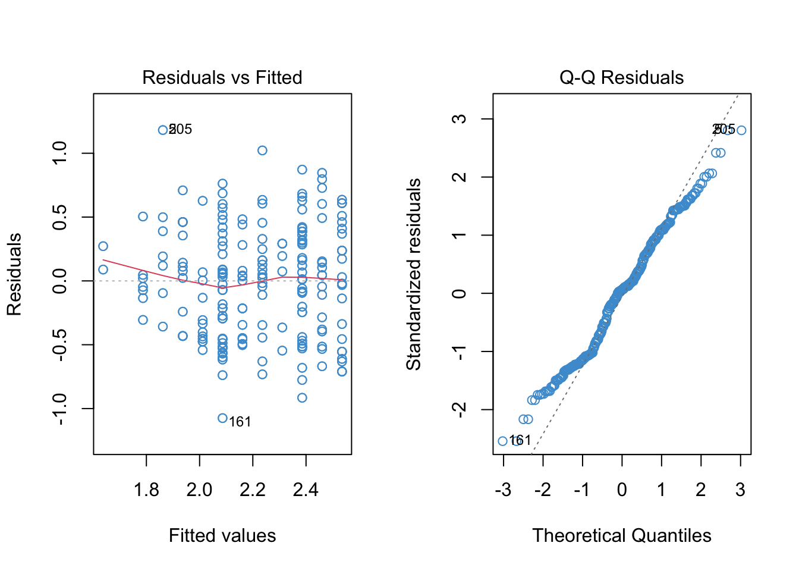
We can see that the log transformation helped with positive skew, although didn’t do much for the negative tail. It also reduced the apparent heteroskedasticity. However, the relationship still appears non-linear, perhaps more so than in the original linear model. We will address non-linearity in the following chapter, and for now just focus on interpreting the log-linear model in this example.
The R-output is below.
But before moving on, let’s make sure we have a good understanding of what the regression coefficients for the log-linear model mean. The model output is reported below.
Code
#summary(mod2)
knitr::include_graphics("files/images/log_linear_output.png", dpi = 125)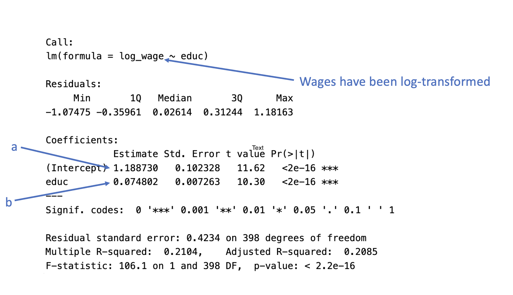
Plugging the values from the R output into the equation for log-linear regression, we have
\[ \begin{align} \widehat{\log(WAGES)} & = a + b (EDUC) \\ \widehat{\log(WAGES)} & = 1.188730 + 0.074802 (EDUC) \end{align} \]
Please take a moment to write down both the approximate and exact interpretation of the regression coefficient for educ. Hint: you need to do some follow-up math with exponents to get the exact interpretation.
8.7 Workbook
This section collects the questions asked in this chapter. The lessons for this chapter will focus on discussing these questions and then working on the exercises in ?sec-exercises-8. The lesson will not be a lecture that reviews all of the material in the chapter! So, if you haven’t written down / thought about the answers to these questions before class, the lesson will not be very useful for you. Please engage with each question by writing down one or more answers, asking clarifying questions about related material, posing follow up questions, etc.
I’ll ask some questions like the following to start class off. You check your answers by pasting the questions into \(R\) or Google’s search bar.
- \(\log(2.7182) = ?\)
- \(\log(1) = ?\)
- \(\log(0) = ?\)
- \(\log(-1) = ?\)
- \(\exp(1) = ?\)
- \(\exp(0) = ?\)
- \(\exp(-1) = ?\)
- What is larger, \(\log(10)\) or \(\exp(10)\)?
- \(\log(\exp(x)) = ?\)
- \(\exp(\log(x)) = ?\)
- Please write down your answers to the questions below and be prepared to share in clas: s
How many times larger is \(Y^* = 6\) than \(Y = 2\)?
What is the relative increase from \(Y = 2\) to \(Y^* = 6\)?
What is the percent increase from \(Y = 200\) to \(Y^* = 600\)?
What is the percent decrease from \(Y = 600\) to \(Y^* = 200\)?
What is the percent change from \(Y = 1\) to \(Y^* = 1\)?
- Please write down your answers to the four questions about the hypothetical example in and be prepared to share your responses in class. *
- Please take a moment to write down your interpretation of the regression coefficient for
educin the summary output below.
Code
attach(wages)
log_wage <- log(wage + 1)
# Regress it on educ
mod2 <- lm(log_wage ~ educ)
summary(mod2)
Call:
lm(formula = log_wage ~ educ)
Residuals:
Min 1Q Median 3Q Max
-1.07475 -0.35961 0.02614 0.31244 1.18163
Coefficients:
Estimate Std. Error t value Pr(>|t|)
(Intercept) 1.188730 0.102328 11.62 <2e-16 ***
educ 0.074802 0.007263 10.30 <2e-16 ***
---
Signif. codes: 0 '***' 0.001 '**' 0.01 '*' 0.05 '.' 0.1 ' ' 1
Residual standard error: 0.4234 on 398 degrees of freedom
Multiple R-squared: 0.2104, Adjusted R-squared: 0.2085
F-statistic: 106.1 on 1 and 398 DF, p-value: < 2.2e-16Code
detach(wages)8.8 Exercises
There isn’t much new in terms of R code in this chapter. The code for the worked example is presented below, but please refer to Section 8.6 for the interpretation.
Code
# Load the data and take a look
load("Wages.RData")
knitr::kable(head(wages))| educ | south | sex | exper | wage | occup | marr | ed |
|---|---|---|---|---|---|---|---|
| 12 | 0 | 0 | 17 | 7.50 | 6 | 1 | 2 |
| 13 | 0 | 0 | 9 | 13.07 | 6 | 0 | 3 |
| 10 | 1 | 0 | 27 | 4.45 | 6 | 0 | 1 |
| 9 | 1 | 0 | 30 | 6.25 | 6 | 0 | 1 |
| 9 | 1 | 0 | 29 | 19.98 | 6 | 1 | 1 |
| 12 | 0 | 0 | 37 | 7.30 | 6 | 1 | 2 |
We will focus on regressing hourly wage (wage) on years of education (educ). The distribution of the outcome variable and its relationship with the predictor are depicted below.
Code
attach(wages)
par(mfrow = c(1,2))
hist(wage, col = "#4B9CD3")
plot(educ, wage, col = "#4B9CD3")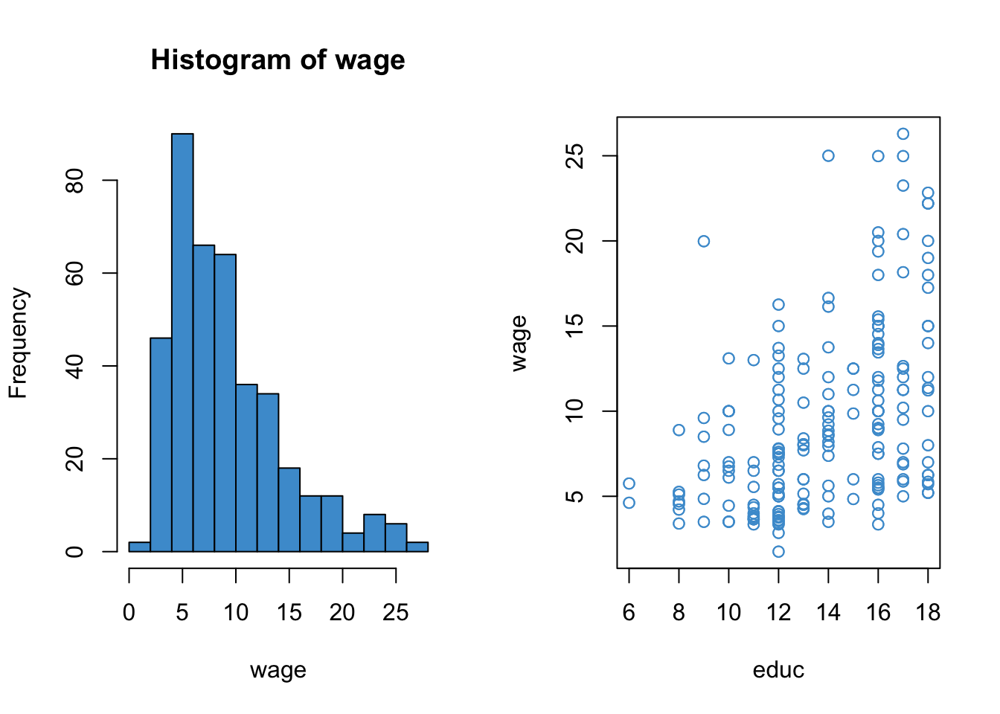
8.8.1 Linear regression of Wages on Education
Working with linear model, we can see that all of the assumptions of the model are violated – we are going to need to try another approach!
Code
mod1 <- lm(wage ~ educ)
# Check out model fit
par(mfrow = c(1,2))
plot(mod1, 1, col = "#4B9CD3")
plot(mod1, 2, col = "#4B9CD3")8.8.2 Log-linear regression of Wages on Education
To run a log-linear model, we can transform the Y-variable using the log function, and then run the model as usual.
Code
# Create log transform of wage
log_wage <- log(wage + 1)
# Regress it on educ
mod2 <- lm(log_wage ~ educ)
# Check out model fit
par(mfrow = c(1,2))
plot(mod2, 1, col = "#4B9CD3")
plot(mod2, 2, col = "#4B9CD3")Code
detach(wages)The log transformation helped with positive skew, although didn’t do much for the negative tail. It reduced the apparent heteroskedasticity. However, the relationship still appears non-linear, perhaps more so than in the original linear model. We will address non-linearity in the following chapter, and for now just focus on interpreting the log-linear model in this example.
- The usual summary output provides the regression slope, which can be interpreted using the “approximate” interpretation of relative change:
Code
summary(mod2)
Call:
lm(formula = log_wage ~ educ)
Residuals:
Min 1Q Median 3Q Max
-1.07475 -0.35961 0.02614 0.31244 1.18163
Coefficients:
Estimate Std. Error t value Pr(>|t|)
(Intercept) 1.188730 0.102328 11.62 <2e-16 ***
educ 0.074802 0.007263 10.30 <2e-16 ***
---
Signif. codes: 0 '***' 0.001 '**' 0.01 '*' 0.05 '.' 0.1 ' ' 1
Residual standard error: 0.4234 on 398 degrees of freedom
Multiple R-squared: 0.2104, Adjusted R-squared: 0.2085
F-statistic: 106.1 on 1 and 398 DF, p-value: < 2.2e-16- Some follow up math to get the exact interpretation of the regression slope in terms of relative change. First \(\exp(b) - 1\):
Code
# Get the regression slope from the output
conf.b <- coef(mod2)[2]
# Exp and subtract one to get exact relative change
exp(conf.b) - 1 educ
0.07767034 - Next we compute a confidence interval for \(\exp(b) - 1\):
Code
# Compute a confidence interval for exact relative change
exp(confint(mod2)[2, ]) - 1 2.5 % 97.5 %
0.06239300 0.09316737 8.9 Write up
Approximate:
- Using a log-linear regression model, it was found that a one unit increase in years of education led to a predicted increase in wages of 7.4% (\(b = .074, t(398) = 10.30, p < .001\)).
Exact:
- Using a log-linear regression model, it was found that a one unit increase in years of education led to a predicted increase in wages of 7.8% (\(\exp(b) - 1 = .078, 95\% \text{ CI: }[0.062, 0.093]\)).